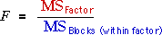

Testing for a factor effect
As shown in the previous page, if a factor varies at block level (with all experimental units in a block getting the same treatment), its effect should be tested by comparing its explained sum of squares with the sum of squares between blocks (within factor levels). The test is based on the ratio of these two mean sums of squares:

This is compared to an F distribution with degrees of freedom equal to these of the numerator and denominator of the F ratio, and the resulting p-value is interpreted as usual.
Combability of hair
An experiment was conducted to compare two formulations of shampoo (A and B). Sixteen hair swatches were prepared and eight were randomly selected for each formulation. Each hair swatch was independently tested five times and a measure of combability was recorded from each of these five runs.
| Swatch | ||||||||
|---|---|---|---|---|---|---|---|---|
| Formulation | 1 | 2 | 3 | 4 | 5 | 6 | 7 | 8 |
| A | 183 133 190 153 173 |
173 173 115 198 150 |
80 75 68 70 58 |
115 125 120 125 148 |
145 113 98 138 140 |
73 123 100 75 115 |
123 138 100 253 93 |
38 55 35 38 53 |
| 9 | 10 | 11 | 12 | 13 | 14 | 15 | 16 | |
| B | 255 110 195 93 213 |
118 200 145 155 108 |
133 155 145 240 230 |
150 130 110 185 105 |
65 60 105 90 100 |
95 65 45 65 60 |
145 175 125 145 180 |
60 55 60 45 65 |
This is a nested design since the treatment (formulations) is applied at block (swatch) level and there are five measurements within each block. The diagram below shows the data.
The analysis of variance table above initially describes the structure of the experimental units without taking account of the factor.
Click the checkbox Split swatches to separate the between-swatches sum of squares into:
The F-ratio associated with the shampoo formulation is the ratio of the corresponding mean sums of squares. From the associated p-value, we should conclude that:
From the p-value 0.7424, there is no evidence of a difference between the two treatments.
This is also evident from the scatterplot of the data. Although the mean combability is slightly higher for Formulation B — its red line is slightly higher — the two means are similar compared to the differences between the swatch means.
Although it is unnecessary in this example (since the researchers know that the swatches will differ in their combability), it is valid to compare the sum of squares for swatches (within formulations) with the residual sum of squares in order to test for differences between the blocks (swatches). The p-value is reported as "0.0000" confirming that the swatches do differ from each other.